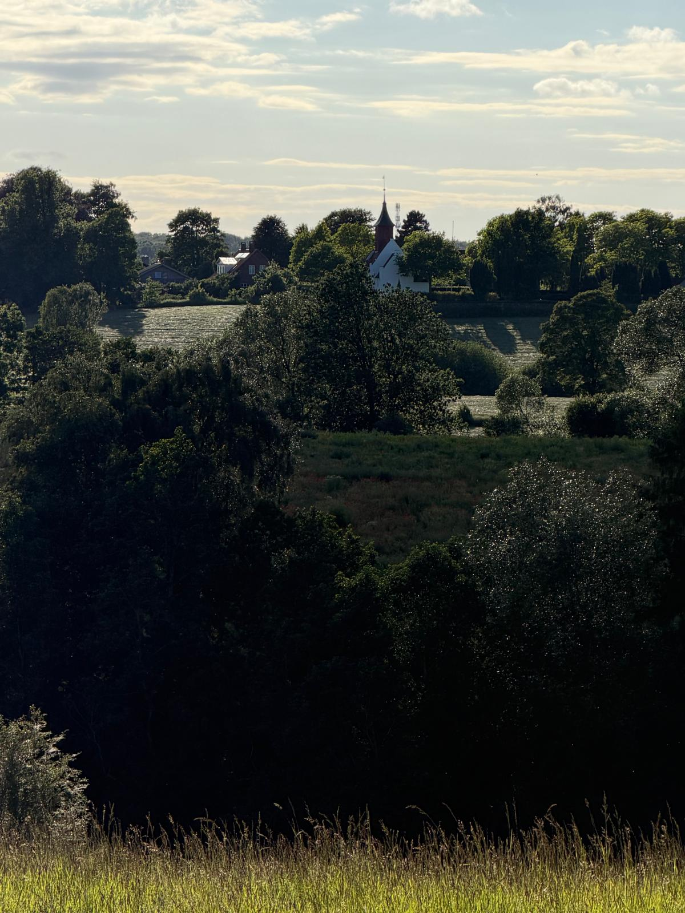
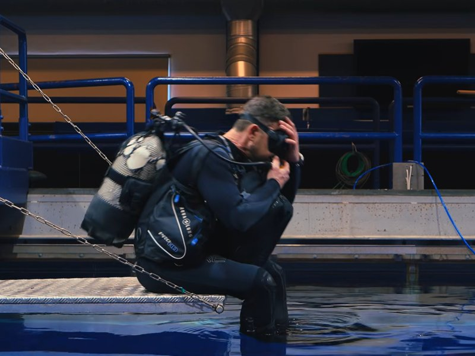

This is my site, but it is about us: Context&, the Nordic Microsoft AI consultancy we merged from four companies and redesigned around AI — at the same time. What you find here is the working-out: what an AI-native company learns by living its own transformation, told by the person who has to stand by it. The polished version lives at contextand.com. The working-out happens here.

Context& starts from a technical foundation: people who build and ship, not only advise. When the world's largest consultancies sell AI transformation, they sell it to the world's largest enterprises — billions flowing toward companies that already have everything. Almost none of it is built for the companies that carry the Nordics: the 100–500-person firms where a transformation either lands on the floor or doesn't land at all.
So the team took the harder path: transform ourselves first. Four companies became one — more than 400 people across Denmark and Finland — redesigned around AI while the paint was still wet, with all the friction that honest people in a real merger produce. That lived experience, scars included, is not the backstory of the offering. It is the offering.
The conviction underneath is simple: knowledge is now abundant — anyone can ask AI for a framework, an analysis, a draft. Judgment is the scarce resource. And trust is what gets judgment used. The team's word for how that trust is built is forpligtende fællesskab — a belonging that binds. The Finns on the team say talkoot.
A belonging that binds us to a standard. You are bound to it — and it is bound to you.
Coming together to do the work that matters — freely, because showing up for each other is the belonging.
Two languages. One idea. The one thing AI cannot commoditise.
That sentence is the operating model, and it is meant literally. When our CISO writes the internal guidance for AI and Copilot usage, that guidance is a product. When the team redesigns a process around agents, the redesign is a method. When our leadership group fights its way to clarity — what to fund, what to say no to — the fight becomes a workshop. An AI-native company is its own laboratory, and the lab notes are for sale.
And we sell what we develop. The scarce resource is judgment — so the work is keeping our own people sharp in an era that keeps moving the target. We have a point of view on what it takes to stay valuable when AI can do more every quarter, and we are building the company that takes responsibility for our team's answer to it — not just our customers'. That is not a side project. The judgment we develop in our own people is the exact thing we bring to your transformation. We don't have two products.
The commercial form is C& Frontier — transformation for companies of 100–500 people, from a company that just did one. One front door, three depths:
One day with your leadership team. Five questions, a live look at your company, and where AI genuinely fits. You leave with a ranked shortlist and a one-page direction — whether or not you go further.
Get the floor solid. Adoption that sticks, governance in place, quick wins live. The foundation most companies skip — and pay for later.
Ship one real bet. One process chosen, redesigned around AI, and running in production. Plus leadership sparring on the way.
Redesign the company. The full operating model — the five questions answered, the culture work done, the transformation led together with your CEO.
And it works — at our customers before it goes on a page here:
Two doors in. The formal one is contextand.com — the team, the offering, the whole story. The side door is this one:
jsc@contextand.comIf you want this for your company — or want to compare scars from your own transformation — write. I read everything.
Trust here is not a value on a poster — it is working infrastructure. High standards and high voice: authority is earned, and challenge is open. We live close to the land and close to our customers. It is where we go to be slow — so we can be sharp at work.
Essays on leadership, trust, and what an AI-native company learns on the way. Written here first — the way everything at Context& is lived first.
What my father's occupation and my mother's border taught me — and why Finland was not a market to me.
Read the essay →What working with people at the start of everything does to someone thirty years in — and why we built a channel for it.
Read the essay →
Everyone who wants a Nordic leadership image reaches for the Viking. We inherited something better — and we run a company on it.
Read the essay →